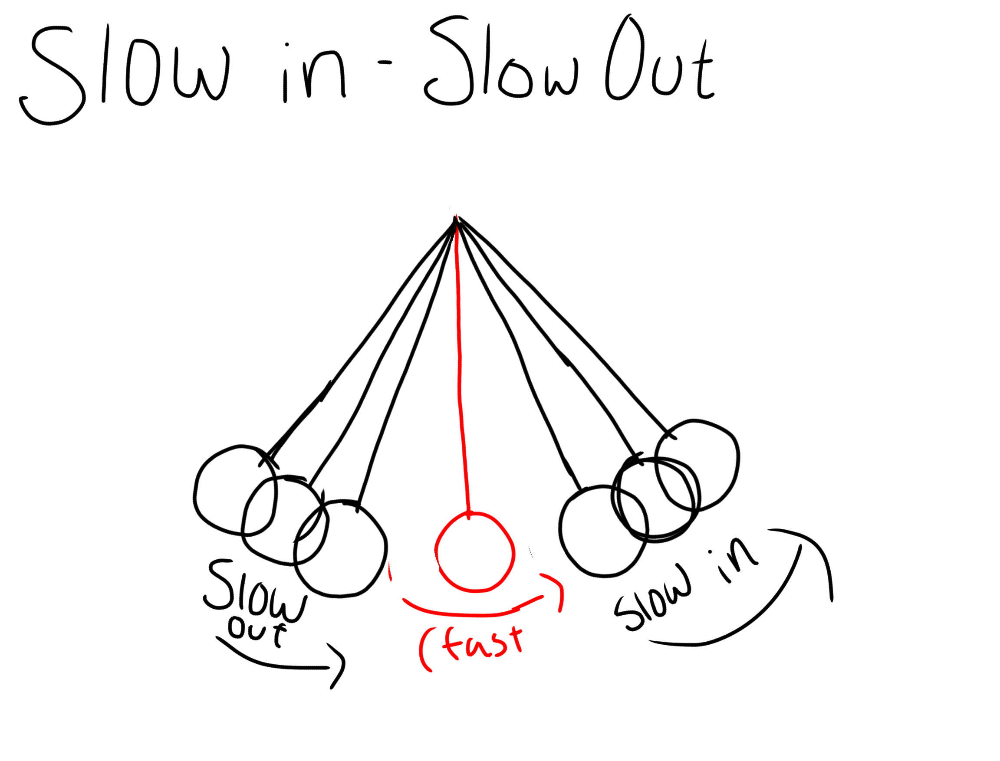
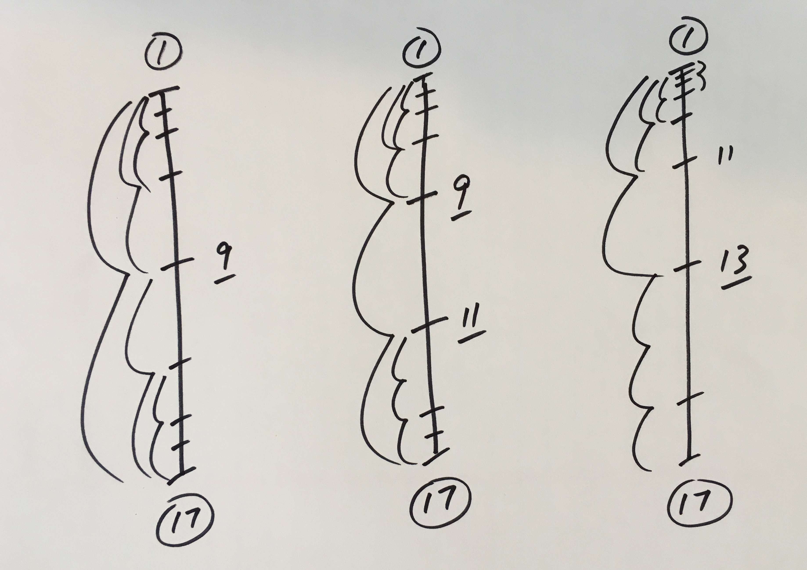

Slow In and Slow Out
On a basic level, Slow In and Slow Out describes the tendency of things to come to rest, or to start moving, in a progressive way. This is a principle that most people understand pretty quickly, as it’s easy to observe in life. More technically, this principle tells us that when we animate something moving from a stop, the spacing of that object needs to progressively increase (widen) until it gets up to speed, at which point the spacing becomes relatively constant. And when that object comes back to rest, the spacing progressively decreases to zero.
Savvy animators came to realize that objects accelerate when they start to move and therefore they needed more drawings there. This became known as a slow out, because the extra drawings slowed the action down at the beginning of the movement, just like in real life. Conversely, the gradual reduction in speed when coming to a stop, again portrayed by extra drawings, became known as slow in. By varying the number of in-betweens, the nature of the slow in or slow out is made more gradual or more rapid.
Here are three spacing charts that all show a slow out from the key pose at frame 1 and a slow in to the key pose at frame 17. In the first, the slow in and slow out are symmetrical and even. In the second, the slow out is a bit slower than the slow in. The third illustrates a very gradual slow out, and a very rapid slow in.
Spacing is a term that comes from the days of animating on paper. It’s slang for movement from frame to frame. Put a few sequential animation drawings on the pegs, turn on the bottom lights, and you’ll see the drawings superimposed on each other. The space between analogous parts of the drawings shows the movement. Big spacing changes between drawings means large movements.